Requisitos:
Realiza el pago a una TC/PD a través del llamado de solicitud del cliente. Actividad realizada en SAC.COM.
Se realiza por AS400 en caso que no se verifique la TC en SAC.com (Disponibilidad 24 a 48 hs)
Disponibilidad inmediata. Pago se verifica en el extracto en 24hs
Pasos a seguir:
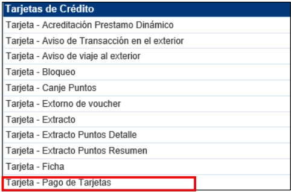
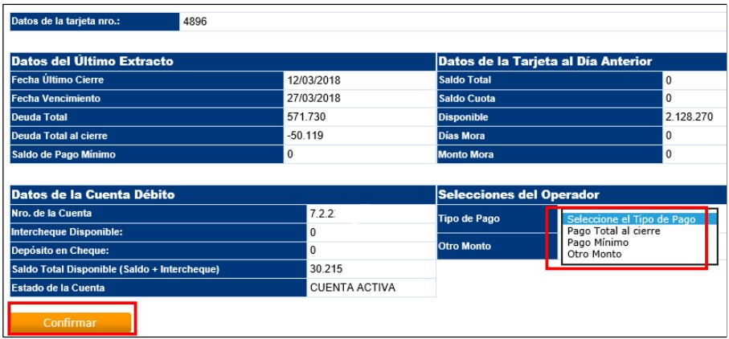
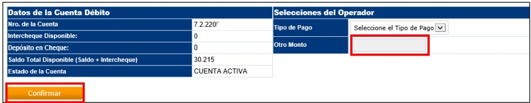
**En caso de que no se verifique la TC en SAC.com, procesar por AS400:
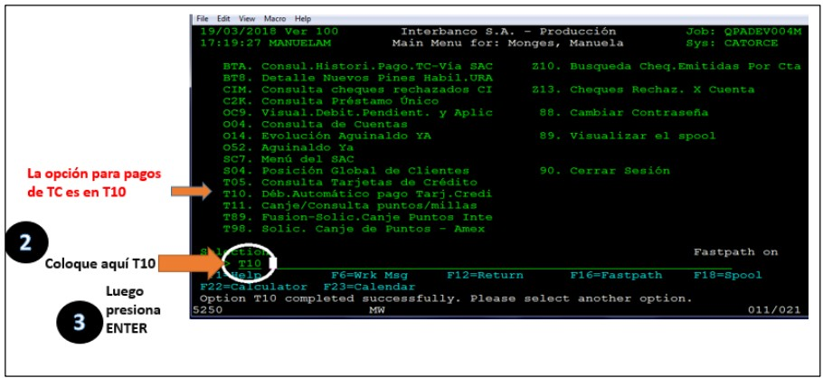
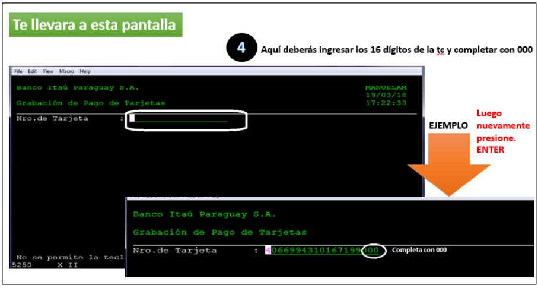
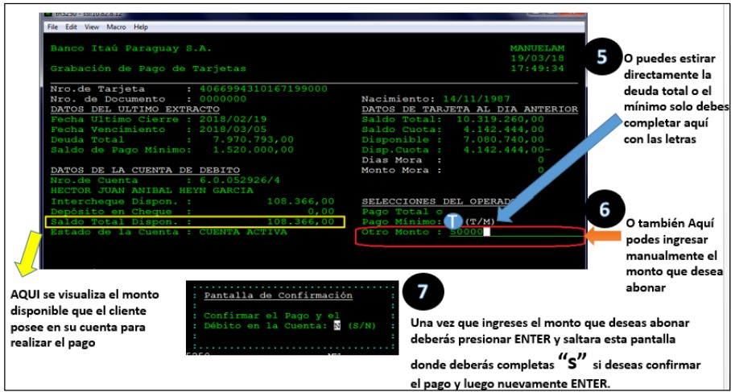
Requisitos:
El cliente deberá remitir un mail los comprobantes de pagos.
Plazo proceso: 24 Hs. Hábiles.
Pasos a seguir:
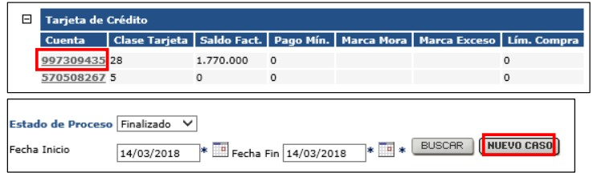
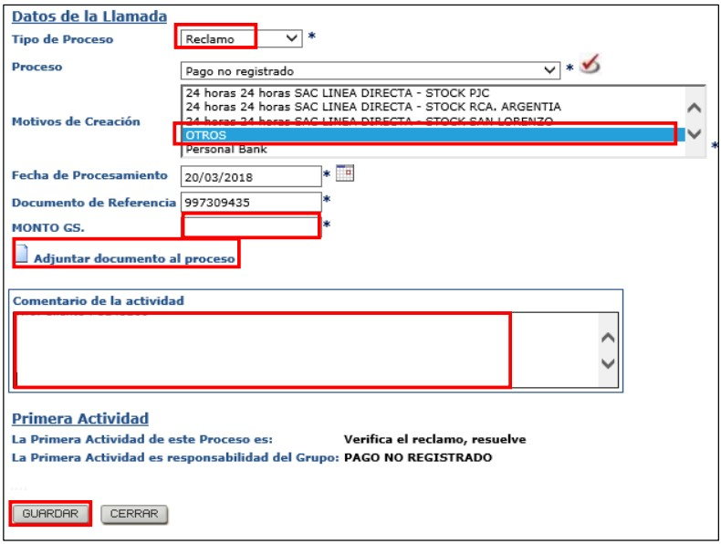
Requisitos:
En caso de cuentas $, informar al cliente sobre la cotización de la fecha.
Plazo proceso: 24 Hs. Hábiles.
Pasos a seguir:
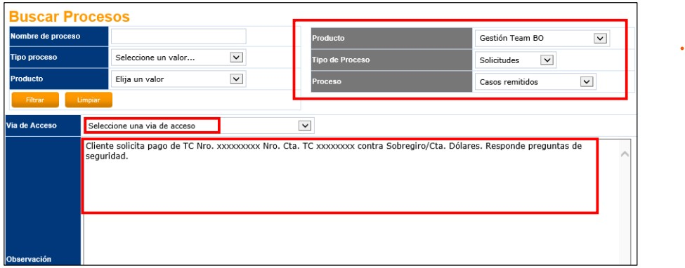
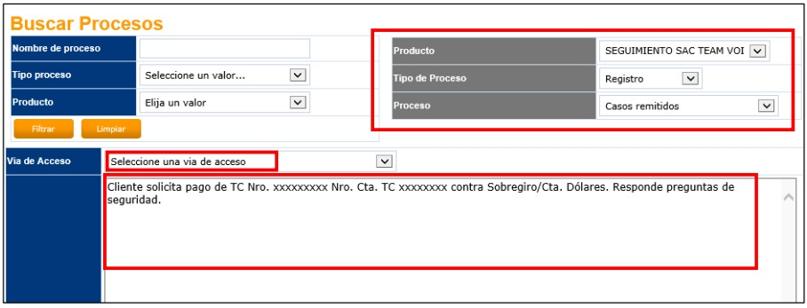
Requisitos:
Se utiliza en casos de que ocurran errores operativos y el pago mínimo generado no corresponda (No corresponde a los casos en los que el cliente menciona por ej. Que no va a poder cubrir el pago mínimo está en mora, en ese caso se deriva a cobranzas).
Pasos a seguir:
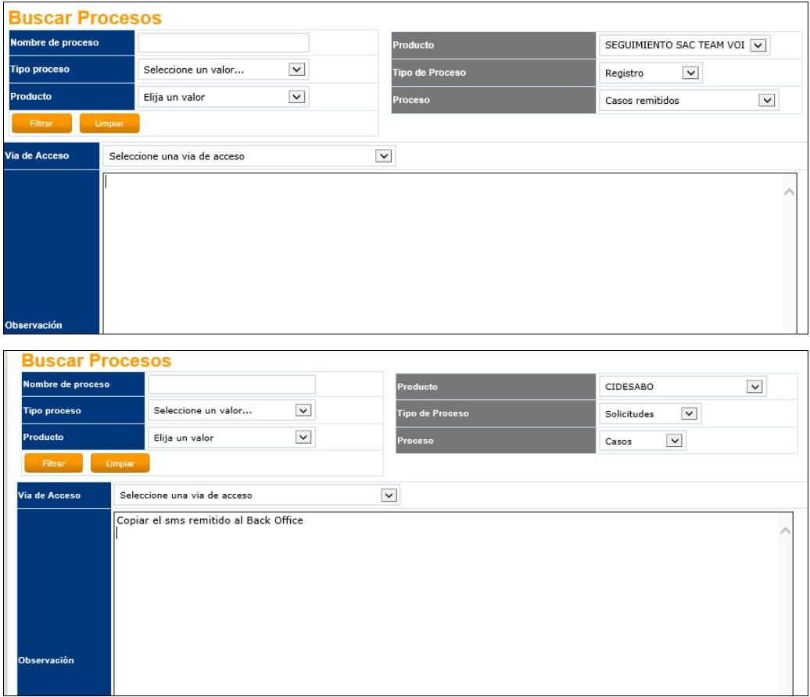
Requisitos:
Cliente solicita pago de TC vía SAC y la misma no se encuentra catastrada aún para el pago.
Plazo de proceso: 24 hs. Hábiles.
Pasos a seguir:
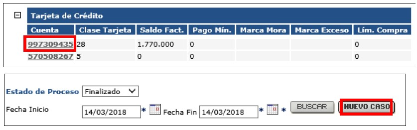
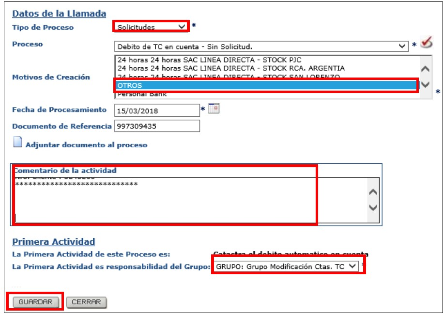
Obs: Completar el comentario de la actividad con los datos correspondientes